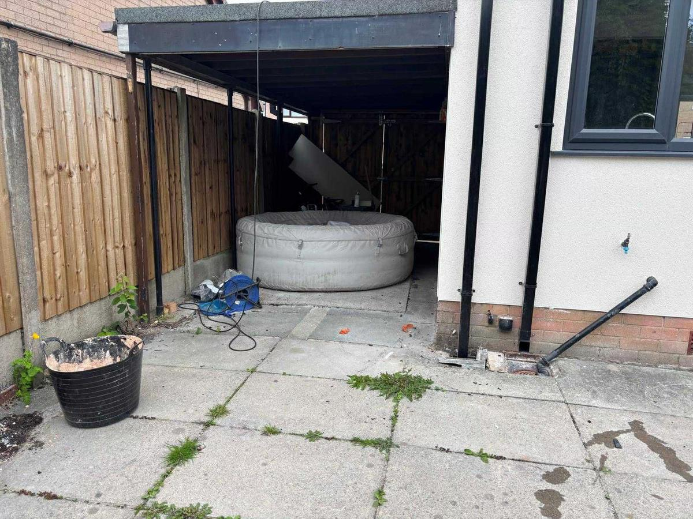
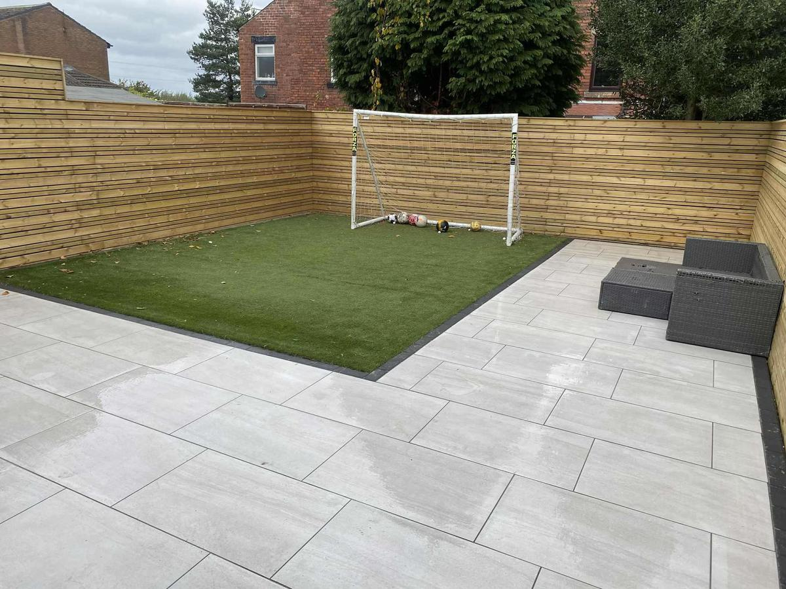
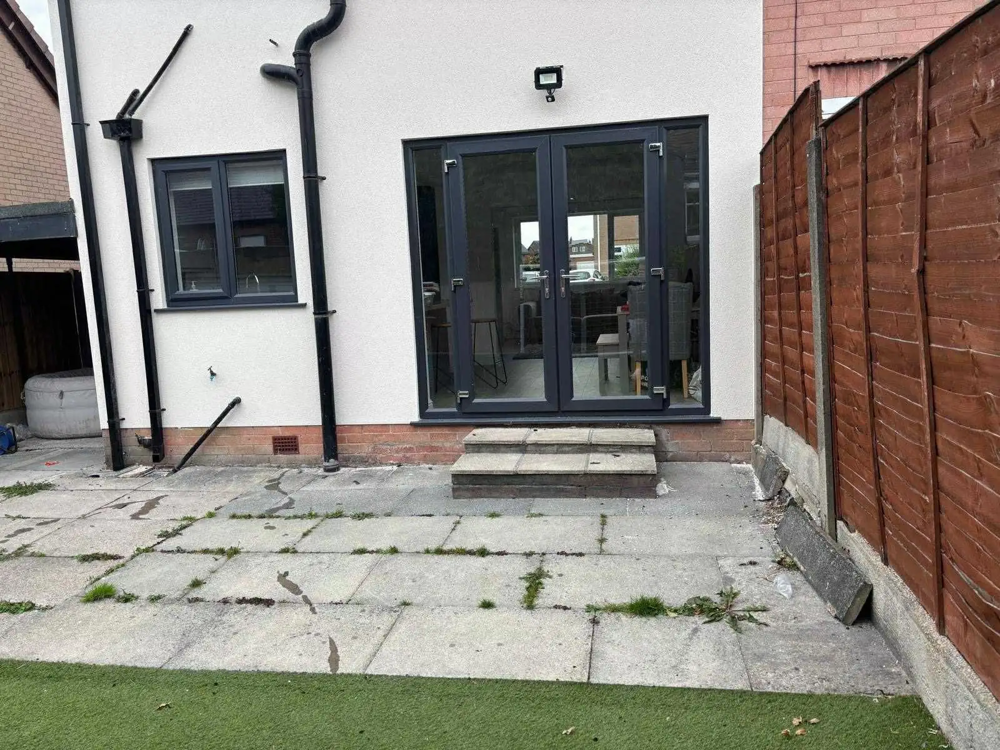
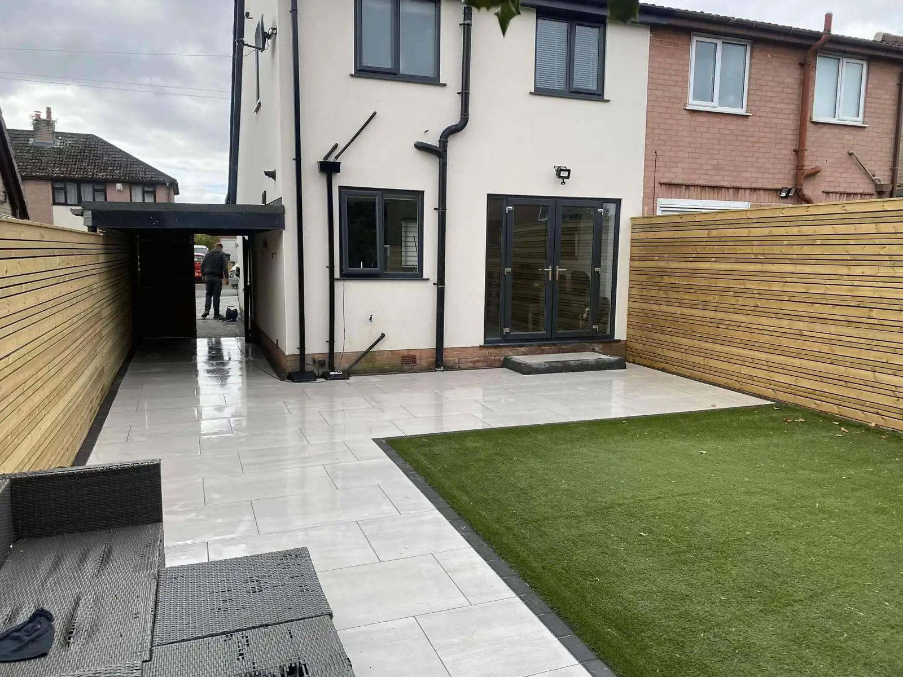

The garden you put up with.
Rotten decking, cracked concrete, weeds in every joint.

Laid properly. TruDrive, driveways and patios across the North West.
Driveways and patios across the North West, from a firm with over 15 years on the tools.


An overgrown pond and decking nobody used.
Cracked concrete, a hot tub, weeds in every crack.


Porcelain patio and path, artificial turf, a raised planter wall.
Porcelain patio, artificial turf, horizontal slatted fence.
What you tell us
The decking has gone soft and it's lethal in the rain.
Weeds come up through the slabs every spring.
The drive is cracked and holds puddles.
I haven't got time for the garden.
What we lay
A porcelain patio. Level underfoot, and it hoses clean.
Slabs on a proper base with the joints filled, so nothing comes through.
Block paving, tarmac or imprinted concrete, with drainage where the water sits.
Porcelain and artificial turf. Nothing to mow, nothing to stain.
Getting a price
- Send a few photosOn WhatsApp, or give Gaz a ring.
- He comes out and measures upThen gives you a price. The quote is free and there's no obligation.
- Pick a start dateOne that suits you.
What customers say
Google reviews appear here.
For Gaz: once your Google Business Profile is set up, your Google reviews show here by themselves. After a job you text the customer one link, and that's it.


Your garden next?
Send Gaz a photo of your drive or garden. He'll tell you what it needs and what it costs.
For Gaz: the business address and the towns you cover go here.